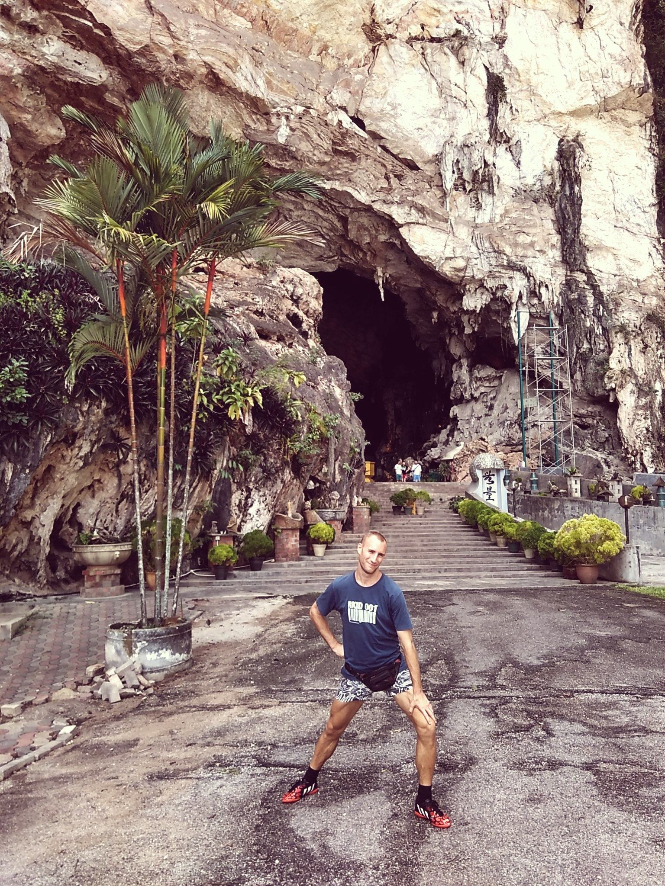
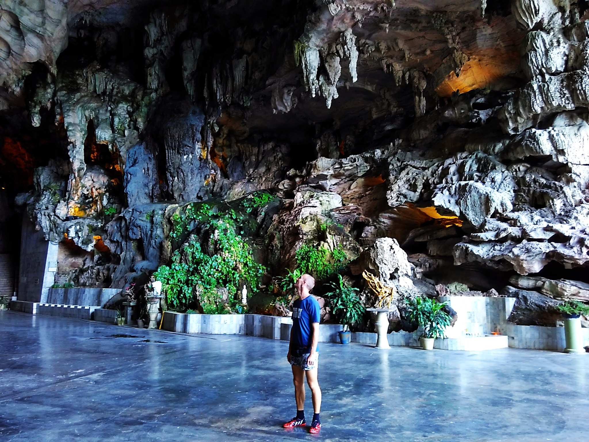
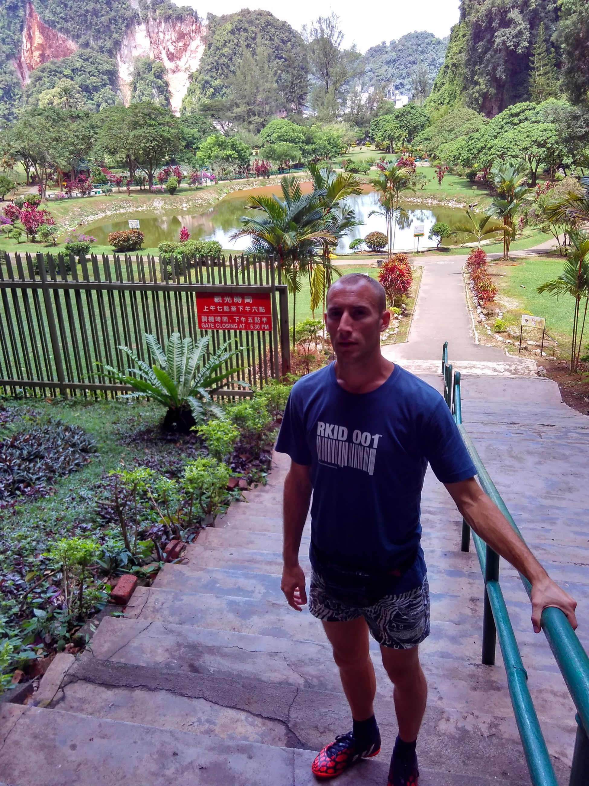
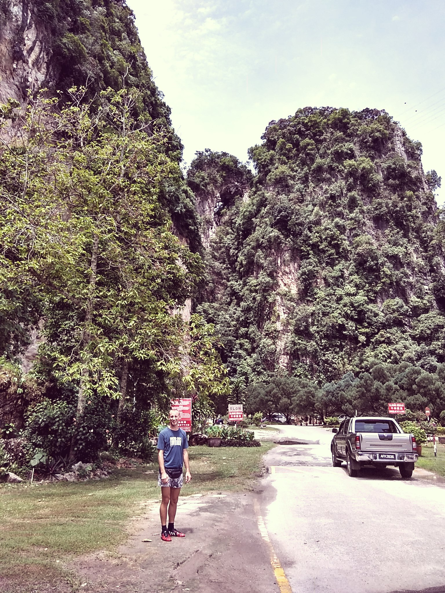
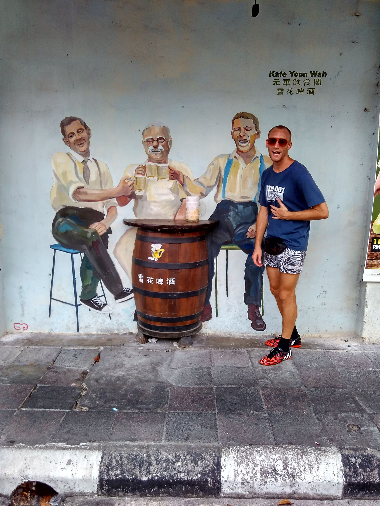
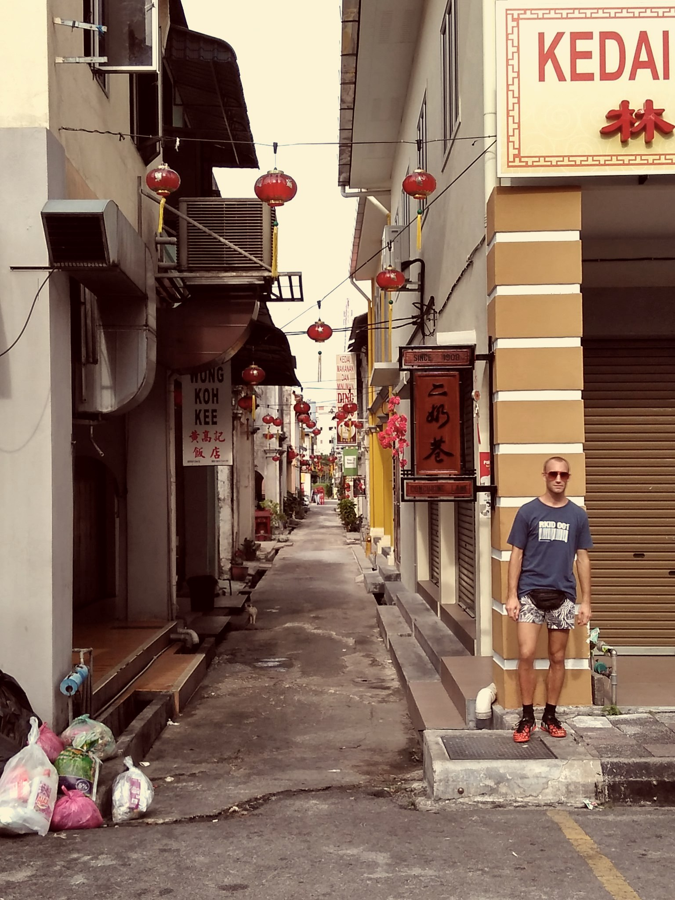
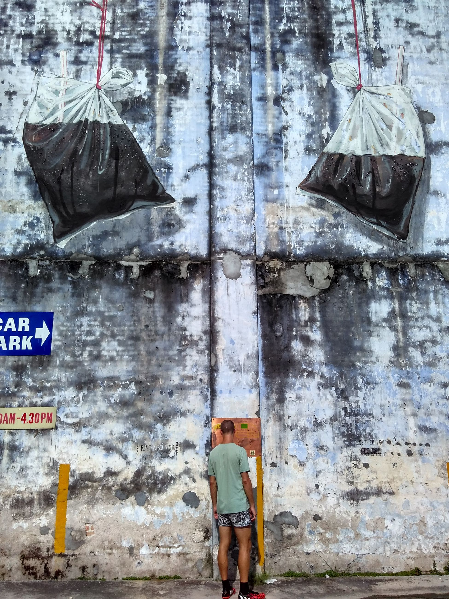
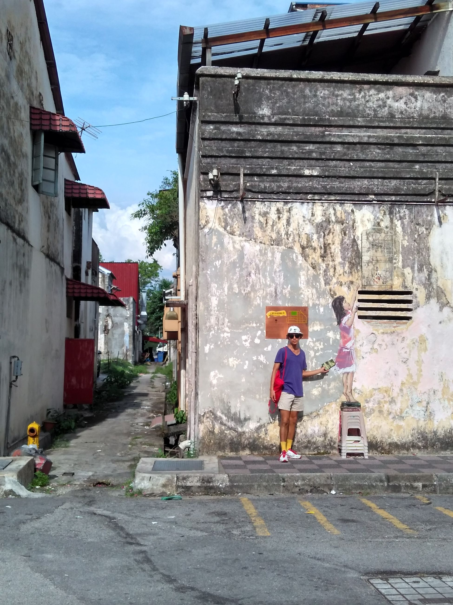
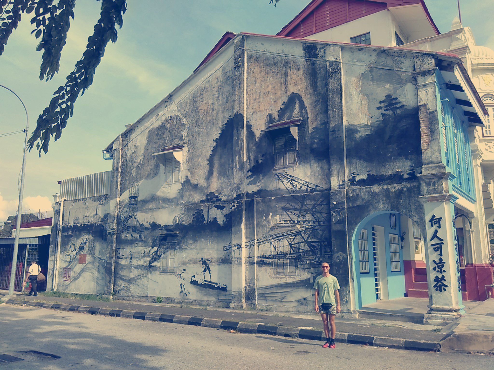

Malaysia is the nearest country to us, so there's always a few cheapies to fly there. This time, we got a decent one-wayer to Ipoh. The plan was to trek from here, then off to Penang for a west-coast tour of Malaysian cities.
Flew Malindo Air. Thought it was going to be budget, which it was, but there was ample leg room and even this great biscuit along the way, choice of coffee or tea. I should have taken a picture of it. When we landed, we were waiting around for our hostel owner to pick us up since it was a bit far from the airport. While waiting, some man approaches us and interviews us about arriving in Ipoh. Turns out, we were on the flagship flight there, so he asks us some leading questions, asks to take our pictures, and before we know it we're in some local online news report! The post has since been deleted though, so I'm not sure it was ever a legit news source. There go our 15 seconds of fame...
Ipoh was cool -- a lot of cool temples nested into mountainsides that are overgrown with some jungle coverage. There are heaps of Chinese influence there, but since many of the migrants are pre-communist, there is a lot of 'traditional' Chinese imagery and customs spread around. It's great to see a bit of Chinese history preserved in places not where the culture originates. I think I went a bit picture crazy upon seeing our first temple and settled down after that. Also, I had just discovered filters on my phone so pretty much was hashtagging myself to pieces.



The only thing is, walking to these places, there are a lot of stray dogs that just hover around everywhere, and they bark a bit scarily. At one point we were just walking along the highway with cars zipping by since there was no sidewalk. The second temple we get to after our initial walk:

The city itself is not too popping. Quiet, narrow streets that are a bit forgotten but have a lot of charm to them. Some of the imperial buildings are just covered in white and it gives a really pristine feel to it. These are located right next to the shophouse-type houses that are just dilapidated (with the occasional few overrun by hipsters and turned into markets). Also, the series of street murals that plaster around the city center is cool too.




To get to a far out temple, we walk along a freeway nearly getting run over, but no one bats an eyelid. It's great.
Most of the food consists of Chinese dishes, some chicken and bean sprout related stuff, and most importantly, Ipoh White Iced Coffee. The shit is #r33Lg00d and I could drink it everyday in a coffee bag. We take the bus the next day to Penang and continue on on our trip.
Overall impression? It has that small-town suburban Taipei feel I remember, except in Malaysia. Most of the Malaysians we've met are super chilled out and easygoing. It made the trip super enjoyable and us about 5 kg heavier. I'll leave you all with a picture
